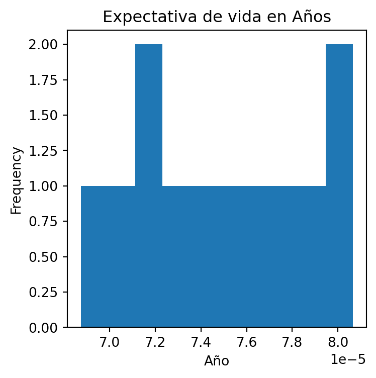

import plotly.express as px
data_canada = px.data.gapminder().query("country == 'Canada'")
fig = px.bar(data_canada, x='year', y='pop')
fig.show()Replicando gráficos de Plotly
- Utilice este Notebook para replicar cualquiera de los gráficos financieros de la gu√≠a de Plotly (Ver üëâ aqu√≠
- Trate de ver e interpretar los datos del DataFrame. Utlice las funciones que hemos visto en clase, por ejemplo:
min,max,mean,median,quantile, corrobore los datos con la funcióndescribe.
! pip install wquantilesDefaulting to user installation because normal site-packages is not writeable
Requirement already satisfied: wquantiles in /home/rstudio/.local/lib/python3.10/site-packages (0.6)
Requirement already satisfied: numpy>=1.18 in /home/rstudio/.local/lib/python3.10/site-packages (from wquantiles) (2.0.0)data_canada = px.data.gapminder().query("country == 'Canada'")
data_canada| country | continent | year | lifeExp | pop | gdpPercap | iso_alpha | iso_num | |
|---|---|---|---|---|---|---|---|---|
| 240 | Canada | Americas | 1952 | 68.750 | 14785584 | 11367.16112 | CAN | 124 |
| 241 | Canada | Americas | 1957 | 69.960 | 17010154 | 12489.95006 | CAN | 124 |
| 242 | Canada | Americas | 1962 | 71.300 | 18985849 | 13462.48555 | CAN | 124 |
| 243 | Canada | Americas | 1967 | 72.130 | 20819767 | 16076.58803 | CAN | 124 |
| 244 | Canada | Americas | 1972 | 72.880 | 22284500 | 18970.57086 | CAN | 124 |
| 245 | Canada | Americas | 1977 | 74.210 | 23796400 | 22090.88306 | CAN | 124 |
| 246 | Canada | Americas | 1982 | 75.760 | 25201900 | 22898.79214 | CAN | 124 |
| 247 | Canada | Americas | 1987 | 76.860 | 26549700 | 26626.51503 | CAN | 124 |
| 248 | Canada | Americas | 1992 | 77.950 | 28523502 | 26342.88426 | CAN | 124 |
| 249 | Canada | Americas | 1997 | 78.610 | 30305843 | 28954.92589 | CAN | 124 |
| 250 | Canada | Americas | 2002 | 79.770 | 31902268 | 33328.96507 | CAN | 124 |
| 251 | Canada | Americas | 2007 | 80.653 | 33390141 | 36319.23501 | CAN | 124 |
data_canada.describe()| year | lifeExp | pop | gdpPercap | iso_num | |
|---|---|---|---|---|---|
| count | 12.000000 | 12.000000 | 1.200000e+01 | 12.000000 | 12.0 |
| mean | 1979.500000 | 74.902750 | 2.446297e+07 | 22410.746340 | 124.0 |
| std | 18.027756 | 3.952871 | 5.940793e+06 | 8210.112789 | 0.0 |
| min | 1952.000000 | 68.750000 | 1.478558e+07 | 11367.161120 | 124.0 |
| 25% | 1965.750000 | 71.922500 | 2.036129e+07 | 15423.062410 | 124.0 |
| 50% | 1979.500000 | 74.985000 | 2.449915e+07 | 22494.837600 | 124.0 |
| 75% | 1993.250000 | 78.115000 | 2.896909e+07 | 27208.617745 | 124.0 |
| max | 2007.000000 | 80.653000 | 3.339014e+07 | 36319.235010 | 124.0 |
data_canada.min()country Canada
continent Americas
year 1952
lifeExp 68.75
pop 14785584
gdpPercap 11367.16112
iso_alpha CAN
iso_num 124
dtype: objectdata_canada.max()country Canada
continent Americas
year 2007
lifeExp 80.653
pop 33390141
gdpPercap 36319.23501
iso_alpha CAN
iso_num 124
dtype: objectdata_canada[['year','lifeExp','pop','gdpPercap','iso_num']].quantile([0.25, 0.5, 0.75])| year | lifeExp | pop | gdpPercap | iso_num | |
|---|---|---|---|---|---|
| 0.25 | 1965.75 | 71.9225 | 20361287.50 | 15423.062410 | 124.0 |
| 0.50 | 1979.50 | 74.9850 | 24499150.00 | 22494.837600 | 124.0 |
| 0.75 | 1993.25 | 78.1150 | 28969087.25 | 27208.617745 | 124.0 |
data_canada[['year','lifeExp','pop','gdpPercap','iso_num']].mean()year 1.979500e+03
lifeExp 7.490275e+01
pop 2.446297e+07
gdpPercap 2.241075e+04
iso_num 1.240000e+02
dtype: float64data_canada[['year','lifeExp','pop','gdpPercap','iso_num']].median()year 1.979500e+03
lifeExp 7.498500e+01
pop 2.449915e+07
gdpPercap 2.249484e+04
iso_num 1.240000e+02
dtype: float64Con los datos de los ejemplos en plotly (es decir, alguno de los DataFrame), trate de crear:
Un gráfico de caja.
Un gráfico de histograma.
Trate de utiliza la función pandas.cut para crear 10 segmentos o contenedores (use la propiedad
bin).
Años = data_canada['lifeExp'] / 1_000_000import pandas as pdbinned_years = pd.cut(Años, bins=10)
binned_years.value_counts(sort=False)lifeExp
(6.87e-05, 6.99e-05] 1
(6.99e-05, 7.11e-05] 1
(7.11e-05, 7.23e-05] 2
(7.23e-05, 7.35e-05] 1
(7.35e-05, 7.47e-05] 1
(7.47e-05, 7.59e-05] 1
(7.59e-05, 7.71e-05] 1
(7.71e-05, 7.83e-05] 1
(7.83e-05, 7.95e-05] 1
(7.95e-05, 8.07e-05] 2
Name: count, dtype: int64ax = Años.plot.hist(figsize=(4, 4), title = 'Expectativa de vida en Años')
ax.set_xlabel('Año')Text(0.5, 0, 'Año')
ax = Años.plot.box()
ax.set_title("Expectativa de Vida en Años")
ax.set_ylabel("Años")Text(0, 0.5, 'Años')